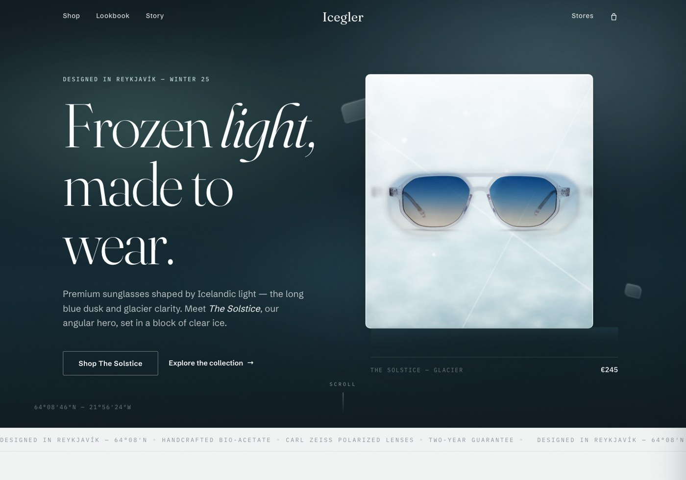
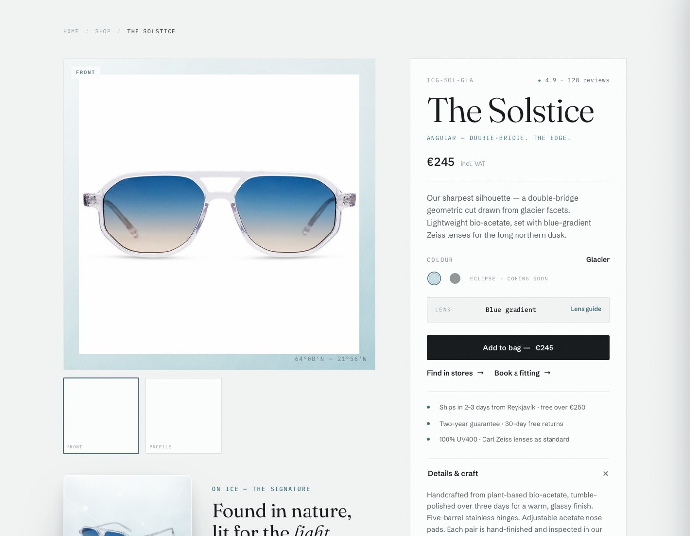
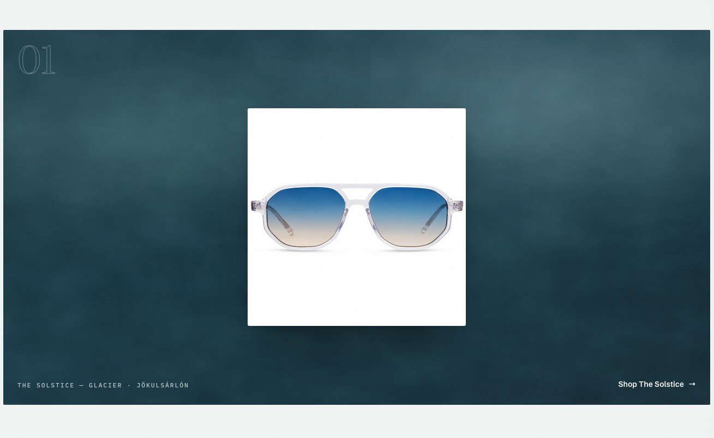

Icegler makes premium sunglasses designed in Reykjavík and shaped by Icelandic light — the long blue dusk, glacier clarity, black basalt, and the strange warmth of a cold place.
GlacialConsideredQuietly edgy
The register is cinematic restraint: Scandinavian minimal luxury with a very slight edge. Editorial air, gallery-clean negative space — the architectural coldness always softened into something natural, ethereal, and a little poetic.
We are
→Restrained and confident. The product and the light do the speaking.
→Product-forward. Photography of the frames is the design.
→Conscious. Materials, repairs, and the cold, honestly told.
We are not
✕Loud, trendy, maximalist, or exclamatory. Never salesy.
✕“Techwear,” brutalist, clinical, or architectural. Warm where others are hard.
✕Ice as monument. Ice is a living element — wet, imperfect, melting.
Contents — 01 Essence · 02 The light · 03 Wordmark · 04 The iceblock · 05 Colour · 06 Type · 07 Voice · 08 Texture · 09 Motion · 10 In use02
Icegler — Brand guide02 — The light
02 — The organizing idea Codified in v2
Every Icegler surface moves through one Icelandic day of light.
Light is the narrative, and its order is the composition. A page, a lookbook, a campaign — each opens in the long blue dusk, clears into glacier daylight, warms briefly over driftwood, and settles into basalt night.
I — The long blue dusk
Arrival and drama. Heroes, covers, closers. The iceblock glows here.
II — Glacier daylight
Clarity and commerce. Shopping, reading, choosing — pale, airy, precise. The default.
III — Driftwood
One warm breath. The human story. Once per journey.
IV — Basalt night
The quiet close. Footers, colophons.
The light is the narrative — the product is the subject03
Icegler — Brand guide03 — Wordmark
03 — The wordmark
Icegler
Icegler
On dusk & basalt — snow
Icegler
On light — basalt
—
3.1Living type, not a picture. The wordmark is set live in Fraunces (weight 340–400, optical sizing on, tracking +0.5%) so it is crisp at every size and recolours with the light.
3.2Clearspace equals the cap-height of the “I” on all sides. Nothing enters it — not even the coordinates.
3.3Minimum size: 24 px on screen, 8 mm in print.
3.4Two inks only. Basalt on light surfaces; snow on dusk and basalt. Never glacial, never gradients, never outlined.
3.5Never bolded, condensed, letter-spaced, italicised, or set in another face. The nav, packaging, and checkout all use this one mark.
The mark is quiet — the ice around it is the theatre04
Icegler — Brand guide04 — The iceblock
04 — The signature device
A pair of frames, frozen in clear ice.
The brand’s recurring hero motif: Icegler frames encased in, or resting on, a literal block of ice. Translucent, slightly wet, light passing through — with the organic imperfections of the real thing: air bubbles, faint fracture lines, a soft melt at the edges.
4.1Found in nature, lit beautifully. Never carved, never rendered like CGI stone.
4.2Where photography doesn’t exist, the block is built in light — layered glacier gradients, a refraction ghost, a slow shimmer. Never a flat mock.
4.3One block per scene. It is a presence, not a pattern.
4.4In motion it drifts — a 9-second float, a passing light sweep. It never spins, bounces, or rotates.
The Solstice — GlacierFig. 01
Ice is a living element — wet, imperfect, melting05
Icegler — Brand guide05 — Colour
05 — Colour
An Icelandic palette, kept on a leash.
Fourteen tones, four families. The ice-white ↔ basalt-black contrast does the heavy lifting and is the edge; everything else is weather.
5.1Light by default. Glacier canvas, basalt ink. Dusk and basalt carry the drama; they never carry the errands.
5.2The 1-in-8 rule. Glacial touches roughly one element in eight — a link, a focus ring, a dot. If glacial is everywhere, it is nowhere.
5.3Never pure black. #000 is banned on large areas. Basalt is warmer and more refined.
5.4Driftwood once. A single warm band per page or spread — the antidote to coldness, ruined by repetition.
Contrast — measured, not assumed
basalt on glacier
16.0 : 1 — body ✓
basalt on snow
17.4 : 1 — body ✓
snow on dusk
17.7 : 1 — body ✓
ice on dusk
12.2 : 1 — body ✓
slate on glacier
5.8 : 1 — body ✓
glacial on glacier
5.1 : 1 — emphasis & large ✓
ash on glacier
2.9 : 1 — captions ≥ 12 pt only
WCAG AA is the floor, not the ceiling. When in doubt, ink it in basalt.
The contrast is the edge07
Icegler — Brand guide06 — Typography
06 — The editorial serif · Fraunces
The long blue dusk, the honest cold.
AaBbGgÞþÐð 0123456789 — & státt í dögunWeights 300–400 · optical sizing on · leading ≤ 1.05
6.1Display only, and generous. Heroes, section openers, pull-quotes — at large optical sizes with tight leading and slight negative tracking. Never for UI, never small.
6.2Compose the rag. Break display lines by meaning, left-anchored and asymmetric. Centered symmetry is the template look we exist to avoid.
6.3The italic accent v2. At most one word per display setting carries the italic — and it is always the word where the light lives: light, dusk, ice, cold, map. The italic is the brand’s pulse; two per line is a flutter.
6.4Banned: Inter, Roboto, Helvetica/Arial, system stacks, Space Grotesk, Playfair Display. They read as default — we are not a default.
Fraunces is what stops the brand reading generic08
Icegler — Brand guide06 — Typography
06.2 — The workhorse · Schibsted Grotesk
Clean and unmistakably Nordic, with just enough character to avoid the default.
Navigation, body, product names, buttons, forms. Body sits at 16–19 px with generous leading. Spare, confident, a touch poetic. Short sentences.
RegularMediumSemiboldBold
06.3 — The precise edge · IBM Plex Mono
€245ICG-SOL-GLAUV400 · ZEISS64°08′46″N
Prices, SKUs, spec tables, eyebrow labels, captions, coordinates. Small sizes only — never headlines. This is the “quietly edgy” signal.
The coordinates signature v2: Reykjavík’s coordinates — 64°08′46″N — 21°56′24″W — recur as a maker’s mark in footers, captions, and plates. The coordinates are the map; we never embed one.
The scale — big jumps and weight extremes, not timid steps
Serif for the poetry · grotesque for the errands · mono for the precision09
Icegler — Brand guide07 — Voice
07 — Voice & naming
Spare. Confident. A touch poetic.
Short sentences. Icelandic-inflected. The product and the light speak; the copy steps back. Never salesy, never exclamatory — an exclamation mark has never survived an Icegler review.
The lexicon — words we own
the long blue dusk · glacier clarity · the cold is honest · nothing hidden · frozen light · made to be kept · we come from the cold
Naming
7.1Frames: “The ___” + one evocative ice or light word. The Solstice · The Drift · The Basalt
7.2Colorways come from the landscape: Glacier, Basalt, Meltwater, Driftwood, Eclipse, Snow, Aurora.
Say it like this
Not
“Don’t miss out! Our best-selling shades — 20% off!!”
But
“Meet The Solstice. Cut for the low sun.”
Not
“Sign up for our newsletter to get updates!”
But
“Join the Cold Club. We send rarely.”
Takk fyrir — the voice stays calm even when it is grateful10
Icegler — Brand guide08 — Texture
08 — Art direction & texture
Texture, never a grey box.
ice-fieldRecipe 01
Layered glacier gradients, turbulence, refraction streaks. The daylight surface.
deep dusk + auroraRecipe 02
The night surface, with a slow-drifting aurora veil. Screen-blended, never gimmicky.
grainRecipe 03 · shown at 12×
3–4% film grain over every surface. It is why nothing feels like a flat vector.
8.1Photography: cool, high-clarity, slightly desaturated — but keep warmth in skin. Glacier-blue shadows, clean whites, natural light.
8.2Product on light: studio shots melt into snow surfaces (multiply). On dusk: mounted as a light print — never floated raw.
8.3Editorial captions are mono footnotes: PLATE 01 — THE SOLSTICE · JÖKULSÁRLÓN, FIG. 02. Numbered, always.
8.4Avoid: beach clichés, tropical palettes, lifestyle clutter, heavy drop shadows, fake CGI ice.
Every empty surface is composed — placeholder imagery is banned11
Icegler — Brand guide09 — Motion
09 — Motion
The light is moving — never an animation playing.
Subtle, slow, expensive-feeling. One orchestrated wow per page; calm confidence everywhere else. Nothing bounces, nothing spins, nothing shouts.
9.2Hovers: 180–280 ms. Buttons flood like meltwater from one edge; cards lift −4 px as the photo swaps to the worn shot.
9.3The iceblock drifts on a 9.5-second float with a passing light sweep. Parallax stays under a factor of 0.25.
9.4Reduced motion is honored everywhere. The still page must be complete — motion is seasoning, not structure.
The two curves
Reveals — cubic-bezier(.22, 1, .36, 1)
Hovers — cubic-bezier(.4, 0, .2, 1)
Big reveals
500–700 ms
Hovers / UI
180–280 ms
Iceblock float
9.5 s loop
Aurora drift
26 s, alternating
Nothing elastic, nothing bouncy — the cold does not hurry12
Icegler — Brand guide10 — In use
10 — The system, living
In use.
icegler.is — Winter 25

Home — the long blue duskFig. 03

Product — glacier daylightFig. 04

Lookbook — plate 01Fig. 05
One system, from hero to checkout13
Icegler® — ReykjavíkColophon
Designed in Reykjavík, shaped by Icelandic light.
System v2 — “Shaped by Light” — codifies the working identity built for the Winter 25 site: the dusk family, the one-day-of-light narrative, the italic accent, and the coordinates signature now stand alongside the founding palette, type, and iceblock of v1.
Type — Fraunces · Schibsted Grotesk · IBM Plex Mono · Guide set in its own system